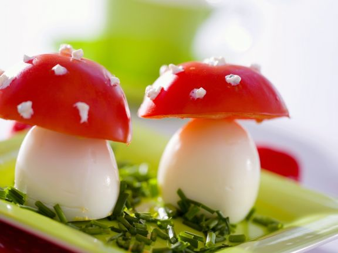

Toadstool Eggs & Tomatoes

Description
This healthy snack is simple and easy to make and absolutely adorable to look at!
It takes about 10 minutes to make and serves 4.
Ingredients
- 4 hardboiled eggs
- 2 medium tomatoes
- mayonnaise
- chives
Directions
- Rinse and trim chives, shake dry, cut into rolls and place on 4 small plates.
- Peel eggs, cut bottom thinly for flat surface and place on the prepared dish.
- Rinse tomatoes, cut in half, remove seeds with a small spoon and place on top of the eggs.
- Spoon mayonnaise in a small piping bag (freezer bag) and decorate the tomato heads with small dots and serve.
Click to go to the original recipe!
Click to go back to homepage!